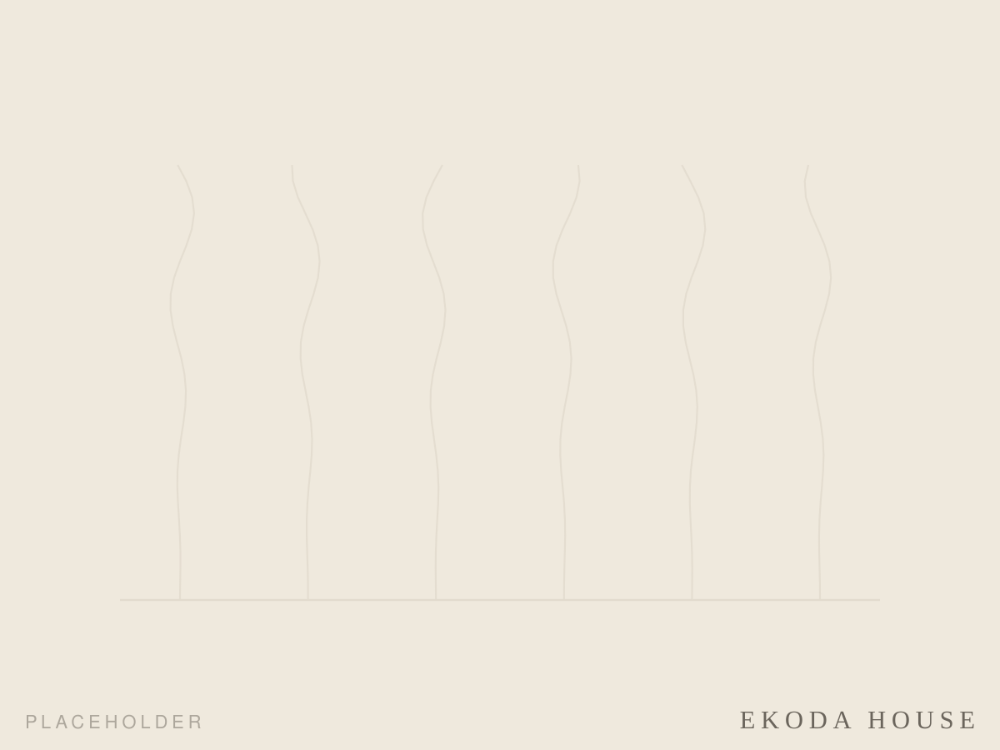
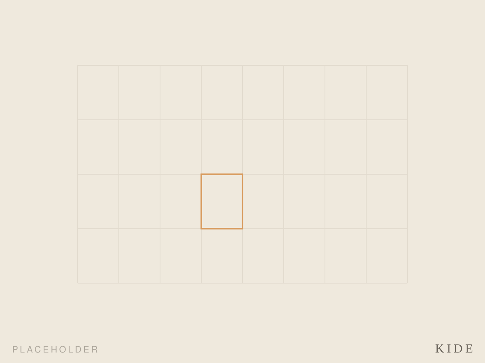
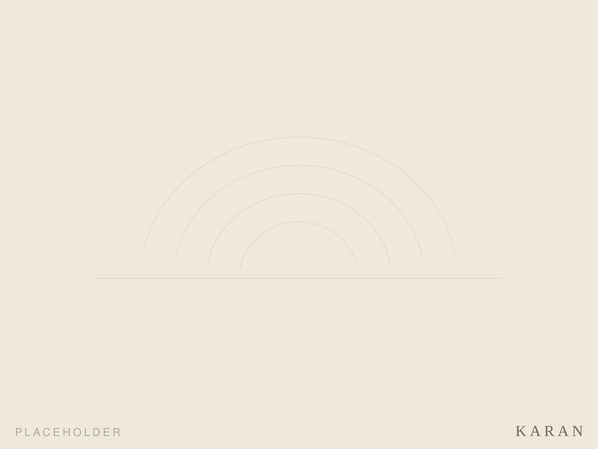

YU-EN Design Studio
The more you tend it,
the more you love it.
We design architecture made to be cared for — and loved for a long time.
大きな怪獣と、仲良くなるように。

YU-EN Design Studio
We design architecture made to be cared for — and loved for a long time.
大きな怪獣と、仲良くなるように。
A building is not finished when it is built — that is where it begins. You clean it, mend it, tend to it season by season. Like befriending a gentle giant, the more you care for it, the more affection quietly grows.
YU-EN Design Studio designs homes and small shops that are never simply "handed over and done." We make places their inhabitants can keep tending, and slowly grow to love — architecture made to be cared for over a long life.
Our ground is a practice that isn't borrowed: studying at KKAA (Kengo Kuma & Associates) while rebuilding and tending our own home by hand, above a real public bathhouse in Tokyo.

セルフビルド改修 ／ 東京・練馬 ／ 進行中

Kuhmo, Finland ／ 2024 ／ 74㎡ ／ Aalto University Wood Program

住宅改修 ／ 進行中

小屋 ／ 進行中

フォリー ／ 進行中

銭湯廃材のプロダクトブランド ／ 進行中
New builds and renovations for homes, shops and community places — designed as places that keep growing through use, with a sense of tending and open space.
Reviving timber, tiles and fittings from demolished bathhouses into everyday objects, carrying their layered time into new form.
Building new relationships between people and place through making and gathering. Grounded in ~2 years as staff at Kosugiyu Tonari.
Study and writing on bathhouse culture, water and architecture, and circular living. An ongoing essay series on note.
Architect / Product Designer 法橋 礼歩
Award & Publication
For commissions, consultations, press or collaboration, feel free to get in touch. We start with a short 15-minute conversation.
Renovating a home or shop, an old building, a bathhouse, a piece of furniture. Even if you don't yet know where to begin, that's perfectly fine. We'll take it slowly, together.
Get in touchLet's tend something, together.